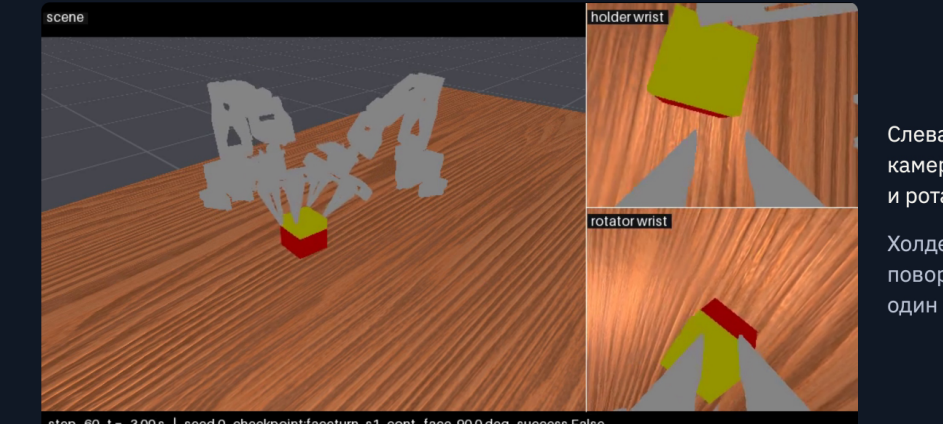

В жизни связь между роботами может пропасть. Поэтому каждый робот должен сам догадываться, что собирается сделать его партнёр.
Чтобы повернуть грань кубика Рубика, одна рука должна его держать, а другая крутить. Если руки не договорятся, кубик сдвинется и сборка собьётся.
Руки SO-ARM101 недорогие и с открытым кодом. Поэтому результат можно потом проверить на настоящих роботах.
Математический алгоритм заранее считает порядок ходов, около 20.
Обе руки знают, какую грань и на сколько градусов повернуть.
Руки сами решают, кто держит, кто крутит и когда отпустить.
Грань повёрнута, остальной кубик на месте.
| Работа | Партнёр и обучение | Реальный робот |
| Distilling Collaborative Dynamics into Latent Space…, 2026 | Дистилляция, демонстрации | Нет |
| Dreaming Of Others: Latent Teammate Modeling…, 2026 | Реконструкция, RL | Нет опытов |
| Agent Modeling as Auxiliary Task…, 2019 | Предсказание действий, RL | Нет |
| Theory of Mind as Intrinsic Motivation…, 2023 | Предсказание действий и целей, RL | Нет |
| Эта работа: Bi-JEPA, предсказание латента партнёра | Без реконструкции, RL | Цель: SO-ARM101 |
суставов у каждой руки: пять подвижных и привод захвата
руки в сцене: холдер держит, ротатор крутит
между основаниями рук в симуляции
поворот грани за один ход
Открытая и недорогая рука из проекта LeRobot, на захвате стоит камера. Роли фиксированы: холдер держит корпус кубика, ротатор поворачивает грань.
только своё
латент агента
будущий латент партнёра
действие руки
Партнёр предсказывается в латенте, без восстановления наблюдений.
Соседние работы учатся на демонстрациях, здесь — обучение с подкреплением.
Сборка кубика: на каждом ходу одна рука держит, другая крутит.
Ablation: партнёр известен, предсказан или не виден.

Прогнали обучение с подражанием: 364 обучающих эпизода из 512. Холдер научился держать куб всегда — 100%. Ротатор действует верно лишь в 2% случаев. Итог — 0 собранных кубиков.
Ротатор не видит челюсть холдера в своих наблюдениях. На уровне непрерывных команд это почти не лечится: рука «не понимает», где чужой захват.
Руки теперь выбирают готовые приёмы: подойти, взять, повернуть, отпустить. Обучается только выбор и очерёдность приёмов. Движения внутри приёма заданы заранее и открыто записаны в допущения работы.
Е1 — один ход. Повернуть одну грань; проверка, что обучение работает.
Е2 — кубик, 2–3 хода. С переворотами куба; цель к предзащите 14 декабря.
Е3 — случайный план. 5 и больше ходов, порядок не фиксирован.
Е4 — полная сборка. План строит солвер Коциембы поверх Е3.
Партнёр не виден. Никакой информации о другой руке — нижняя граница.
Партнёр известен. Полная информация — верхняя граница.
Партнёр предсказан. Bi-JEPA угадывает состояние партнёра — весна, главный вопрос работы.
Успех в парах роботов из разных обучений, разница между режимами видимости, восстановление после сбоев.
Ядро и шесть поворотных слоёв. Слои вращаются на 90° и 180°. Физика мешает повернуть слой, который зажат другой рукой.
Каждые несколько шагов обе руки одновременно выбирают по приёму. В среду встроены сбои: захват может не удаться, грань — проскользнуть.
Скриптовый эталон прошёл всю цепочку хода: переворот куба, подход, захват, поворот, отпускание. Среда проверена 337 автотестами. Один ход считается в 6 раз быстрее: 0.34 с вместо 1.9 с.
Ротатор сжимал грань губками и крутил запястье. Грань почти не двигалась: угол доходил лишь до 2°, куб смещался на 9 сантиметров. Контакт губок с гранью оказался слишком капризным, чтобы успеть в срок.
Пока ротатор действительно держит грань, среда сама доводит поворот слоя — синхронно с запястьем руки. Без настоящего захвата ассист ничего не делает. Это открыто записано в допущения: движения заданы, предмет работы — согласование.